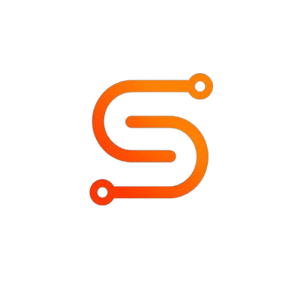

<!DOCTYPE html>
<html lang="pt-BR">
<head>
<meta charset="UTF-8">
<title>SertCode — stories dos destaques</title>
<link rel="preconnect" href="https://fonts.googleapis.com">
<link rel="preconnect" href="https://fonts.gstatic.com" crossorigin>
<link href="https://fonts.googleapis.com/css2?family=Inter:wght@400;500;600;700&family=Space+Grotesk:wght@500;600;700&display=swap" rel="stylesheet">
<style>
  :root{--preto:#050505;--laranja:#FF6A00;--brilho:#FF8A00;--escuro:#D94A00;
        --texto:#F2F2F2;--suave:#9A9A9A}
  *{margin:0;padding:0;box-sizing:border-box}
  body{background:#111;font-family:'Inter',sans-serif;-webkit-font-smoothing:antialiased}

  /* 1080x1920. O Instagram cobre o topo com as barrinhas e o perfil, e o
     rodapé com a caixa de resposta: o conteúdo vive entre 300 e 1620px. */
  .story{position:relative;width:1080px;height:1920px;overflow:hidden;
    background:var(--preto);color:var(--texto);
    padding:300px 92px 320px;display:flex;flex-direction:column}
  body:not(.todos) .story{display:none}
  body:not(.todos) .story.ativo{display:flex}
  /* A folha de contato escala o story inteiro em vez de encolher a caixa:
     reduzir width/height manteria os tipos no tamanho original e o
     conteúdo transbordaria, mostrando um recorte em vez da miniatura. */
  /* Float em vez de flex: com zoom, o flex-basis ainda é resolvido no
     tamanho original (1080px) e só caberia um por linha. */
  body.todos{padding:16px;background:#1a1a1a;display:flow-root}
  body.todos .story{zoom:.25;float:left;margin:0 32px 32px 0}

  /* Faixas que marcam o que a interface do Instagram cobre; só com ?guia=1. */
  .guia{position:absolute;left:0;right:0;background:rgba(255,0,80,.14);
    border:1px dashed rgba(255,0,80,.4);display:none;z-index:9}
  .guia.alto{top:0;height:300px} .guia.baixo{bottom:0;height:320px}
  body.guia .guia{display:block}

  .aurora{position:absolute;inset:0;pointer-events:none;
    background:radial-gradient(46% 24% at 86% 10%, rgba(255,138,0,.20), transparent 70%),
               radial-gradient(40% 22% at 6% 92%, rgba(217,74,0,.15), transparent 70%)}
  .conteudo{position:relative;z-index:2;display:flex;flex-direction:column;height:100%}
  /* A marca fica no alto e o rodapé embaixo; o miolo ocupa o resto e
     centra o texto nele. Sem isso o conteúdo encosta no topo e sobra
     um vazio grande no meio da tela. */
  .miolo{flex:1;display:flex;flex-direction:column;justify-content:center;min-height:0}

  .marca{display:flex;align-items:center;gap:15px;margin-bottom:46px}
  .marca img{width:50px;height:50px}
  .marca span{font-family:'Space Grotesk',sans-serif;font-size:25px;font-weight:600}
  .marca b{font-weight:700;background:linear-gradient(90deg,var(--brilho),var(--escuro));
    -webkit-background-clip:text;-webkit-text-fill-color:transparent}

  .etiqueta{display:inline-flex;align-items:center;gap:11px;align-self:flex-start;
    padding:11px 22px;border-radius:999px;border:1px solid rgba(255,106,0,.3);
    background:rgba(255,106,0,.08);color:var(--laranja);
    font-size:19px;font-weight:700;letter-spacing:.13em;text-transform:uppercase;margin-bottom:34px}
  .etiqueta i{width:9px;height:9px;border-radius:50%;background:var(--laranja)}

  h1{font-family:'Space Grotesk',sans-serif;font-size:88px;font-weight:700;
     line-height:1.05;letter-spacing:-.025em}
  h2{font-family:'Space Grotesk',sans-serif;font-size:62px;font-weight:700;
     line-height:1.12;letter-spacing:-.02em;margin-bottom:32px}
  .destaque{background:linear-gradient(90deg,var(--brilho),var(--escuro));
    -webkit-background-clip:text;-webkit-text-fill-color:transparent}
  p{font-size:33px;line-height:1.6;color:var(--suave)}
  p+p{margin-top:26px}
  p strong{color:var(--texto);font-weight:600}

  .lista{list-style:none;display:flex;flex-direction:column;gap:26px;margin-top:6px}
  .lista li{display:flex;gap:20px;align-items:flex-start;font-size:32px;line-height:1.42}
  .lista i{width:13px;height:13px;flex-shrink:0;margin-top:13px;transform:rotate(45deg);
    background:linear-gradient(135deg,var(--brilho),var(--escuro))}
  .lista b{display:block;font-weight:600;color:var(--texto)}
  .lista small{display:block;font-size:26px;color:var(--suave);margin-top:5px;line-height:1.45}

  .centro{justify-content:center;text-align:center;align-items:center}
  .centro .conteudo{justify-content:center;align-items:center;text-align:center}
  .simbolo{width:150px;margin-bottom:52px;filter:drop-shadow(0 0 60px rgba(255,106,0,.45))}

  /* ── número da fase ── */
  .fase{display:flex;align-items:center;gap:26px;margin-bottom:34px}
  .fase b{width:108px;height:108px;flex-shrink:0;border-radius:30px;
    display:flex;align-items:center;justify-content:center;
    background:linear-gradient(135deg,var(--brilho),var(--escuro));color:#fff;
    font-family:'Space Grotesk',sans-serif;font-size:50px;font-weight:700}
  .fase span{font-size:25px;font-weight:700;letter-spacing:.13em;
    text-transform:uppercase;color:var(--laranja)}

  /* ── pergunta ── */
  .pergunta{font-family:'Space Grotesk',sans-serif;font-size:54px;font-weight:700;
    line-height:1.18;margin-bottom:30px}
  .marcador{display:block;font-size:92px;line-height:.8;color:var(--laranja);
    opacity:.35;margin-bottom:12px;font-family:'Space Grotesk',sans-serif}

  /* ── contato ── */
  .canais{display:flex;flex-direction:column;gap:22px;width:100%;margin-top:14px}
  .canal{display:flex;align-items:center;gap:24px;padding:34px 36px;border-radius:26px;
    border:1px solid rgba(255,106,0,.26);background:rgba(255,106,0,.05);text-align:left}
  .canal.cheio{background:linear-gradient(90deg,var(--brilho),var(--escuro));border-color:transparent}
  .canal svg{width:46px;height:46px;flex-shrink:0;stroke:var(--laranja);fill:none;
    stroke-width:1.8;stroke-linecap:round;stroke-linejoin:round}
  .canal.cheio svg{stroke:#fff}
  .canal b{display:block;font-size:33px;font-weight:700}
  .canal small{display:block;font-size:26px;color:var(--suave);margin-top:4px}
  .canal.cheio small{color:rgba(255,255,255,.82)}

  .rodape{margin-top:auto;padding-top:44px;display:flex;align-items:center;
    justify-content:space-between;gap:20px}
  .site{font-size:26px;color:var(--suave)}
  .passo-conta{font-family:'Space Grotesk',sans-serif;font-size:26px;
    font-weight:600;color:#3A3A3A}
</style>
</head>
<body>
<div id="palco"></div>

<script>
const WA = '(88) 99435-5394';

/* Cada destaque é uma lista de telas. O tipo decide o molde; o conteúdo
   fica separado do desenho, então mudar texto não mexe em CSS. */
const DESTAQUES = {

/* ══════════ QUEM SOMOS ══════════ */
'quem-somos': [
  { tipo:'capa', titulo:'Quem<br><span class="destaque">somos</span>',
    sub:'Conheça a SertCode' },

  { tipo:'texto', etiqueta:'A marca',
    titulo:'Nascemos no sertão.<br><span class="destaque">Programamos para o mundo.</span>',
    textos:['A SertCode carrega a essência do sertão: forte, resiliente e criativo — aplicada ao desenvolvimento de tecnologia moderna.'] },

  { tipo:'retrato', etiqueta:'Quem lidera',
    nome:'Roseanne<br>N. Souza', cargo:'CEO | Cofundadora',
    formacao:'Administradora e Desenvolvedora de Sistemas',
    texto:'A mesma pessoa que entende o seu negócio é quem escreve o código. É ela quem conduz cada projeto e fala com cada cliente.' },

  { tipo:'texto', etiqueta:'Nossa missão',
    titulo:'Transformar empresas através de <span class="destaque">sistemas inteligentes</span>.',
    textos:['Tecnologia personalizada, capaz de gerar crescimento, eficiência e inovação.'] },

  { tipo:'lista', etiqueta:'Nossos valores',
    titulo:'No que <span class="destaque">acreditamos</span>',
    itens:[
      {b:'Inovação', s:'Evolução constante para criar soluções modernas e eficientes.'},
      {b:'Excelência', s:'Qualidade, desempenho e atenção aos detalhes em cada projeto.'},
      {b:'Compromisso', s:'Relações feitas de responsabilidade, transparência e confiança.'},
      {b:'Transformação', s:'A tecnologia como motor de crescimento e novas oportunidades.'},
    ] },

  { tipo:'texto', etiqueta:'Nosso compromisso',
    titulo:'Tecnologia feita para a <span class="destaque">realidade da sua empresa</span>.',
    textos:['Cada empresa tem desafios, processos e objetivos diferentes.',
            '<strong>Não oferecemos soluções genéricas.</strong> Criamos tecnologia que trabalha a favor do seu negócio.'] },
],

/* ══════════ SERVIÇOS ══════════ */
'servicos': [
  { tipo:'capa', titulo:'Nossos<br><span class="destaque">serviços</span>',
    sub:'Dois caminhos para resolver o seu problema' },

  { tipo:'lista', etiqueta:'Como atendemos',
    titulo:'Dois <span class="destaque">caminhos</span>',
    itens:[
      {b:'1 · Sistemas próprios', s:'Soluções já desenvolvidas pela SertCode, prontas para implantar.'},
      {b:'2 · Sistemas personalizados', s:'Construídos do zero, sob medida para a sua operação.'},
    ],
    nota:'Nos próximos stories, cada um deles.' },

  { tipo:'capa', titulo:'Sistemas<br><span class="destaque">próprios</span>',
    sub:'Prontos para implantar' },

  { tipo:'texto', etiqueta:'Sistemas próprios',
    titulo:'Já desenvolvidos.<br><span class="destaque">Prontos para usar.</span>',
    textos:['A SertCode mantém sistemas construídos em torno de demandas que o mercado repete.',
            'Você não espera meses de desenvolvimento: implanta, configura e começa a usar.'] },

  { tipo:'lista', etiqueta:'Sistemas próprios',
    titulo:'Por que <span class="destaque">escolher</span>',
    itens:[
      {b:'Implantação rápida', s:'O sistema já existe. O prazo é de configuração, não de construção.'},
      {b:'Investimento menor', s:'O desenvolvimento foi diluído — você paga pelo uso, não pelo zero.'},
      {b:'Personalização inclusa', s:'Ajustamos o que a sua empresa precisa de diferente.'},
      {b:'Evolução contínua', s:'Melhorias do produto chegam a você sem custo de projeto.'},
    ] },

  { tipo:'capa', titulo:'Sistemas<br><span class="destaque">personalizados</span>',
    sub:'Construídos do zero' },

  { tipo:'texto', etiqueta:'Sob medida',
    titulo:'Quando nada pronto <span class="destaque">resolve</span>.',
    textos:['Tem operação que não cabe em sistema de prateleira. Processo próprio, regra específica, jeito de trabalhar que é o diferencial da empresa.',
            '<strong>Aí a gente constrói do zero</strong>, no formato da sua realidade.'] },

  { tipo:'lista', etiqueta:'Sob medida',
    titulo:'O que <span class="destaque">desenvolvemos</span>',
    itens:[
      {b:'Sistemas web sob medida', s:'CRM, ERP, portais e plataformas.'},
      {b:'Dashboards e painéis', s:'Indicadores em tempo real para decidir com segurança.'},
      {b:'Automação de processos', s:'O que é repetitivo e manual passa a rodar sozinho.'},
      {b:'Integrações entre sistemas', s:'APIs e plataformas conversando entre si.'},
      {b:'Sites e landing pages', s:'Presença digital feita para converter.'},
      {b:'Manutenção e evolução', s:'Correções, melhorias e modernização do que já existe.'},
    ] },

  { tipo:'texto', etiqueta:'Não sabe qual escolher?',
    titulo:'A gente <span class="destaque">descobre junto</span>.',
    textos:['O diagnóstico é gratuito e sem compromisso. Entendemos a sua operação e dizemos com honestidade qual caminho faz sentido.',
            '<strong>Às vezes a resposta é o sistema pronto. Às vezes é construir.</strong>'],
    rodape:'Chame no direct para conversar' },
],

/* ══════════ SISTEMAS ══════════ */
'sistemas': [
  { tipo:'capa', titulo:'Os<br><span class="destaque">sistemas</span>',
    sub:'O que a gente constrói, na prática' },

  { tipo:'texto', etiqueta:'Na prática',
    titulo:'O que é um <span class="destaque">sistema sob medida</span>?',
    textos:['É um software construído a partir do seu processo — e não um pronto no qual você precisa encaixar a empresa.',
            'Cada tela, cada campo e cada regra existe porque a sua operação precisa dela.'] },

  { tipo:'lista', etiqueta:'Gestão',
    titulo:'<span class="destaque">CRM e ERP</span> personalizados',
    itens:[
      {b:'CRM', s:'Clientes, oportunidades, propostas e histórico de relacionamento num lugar só.'},
      {b:'ERP', s:'Financeiro, estoque, compras e operação integrados, do jeito que a empresa trabalha.'},
    ],
    nota:'Sem módulo que você paga e nunca usa.' },

  { tipo:'lista', etiqueta:'Plataformas',
    titulo:'Portais e <span class="destaque">áreas de acesso</span>',
    itens:[
      {b:'Portal do cliente', s:'Seu cliente acompanha pedidos, documentos e cobranças sozinho.'},
      {b:'Painel interno', s:'A equipe trabalha com permissões por perfil e registro de cada ação.'},
      {b:'Plataformas sob demanda', s:'Marketplaces, catálogos e ambientes com regras próprias.'},
    ] },

  { tipo:'lista', etiqueta:'Dados',
    titulo:'Dashboards que <span class="destaque">mostram o que importa</span>',
    itens:[
      {b:'Indicadores em tempo real', s:'O número atualizado na hora da decisão, não no fim do mês.'},
      {b:'Dados dispersos reunidos', s:'Planilha, sistema antigo e anotação virando uma visão só.'},
      {b:'Relatórios em PDF e Excel', s:'Para levar à reunião, ao contador ou ao conselho.'},
    ] },

  { tipo:'texto', etiqueta:'Automação',
    titulo:'O que é repetitivo <span class="destaque">roda sozinho</span>.',
    textos:['Cobrança que precisa ser enviada, relatório que alguém monta na mão, dado que é digitado duas vezes em dois sistemas.',
            '<strong>Tudo isso pode ser automatizado</strong> — e o tempo da equipe volta para o que exige pessoa.'],
    rodape:'Qual desses a sua empresa precisa?' },
],

/* ══════════ PROCESSO ══════════ */
'processo': [
  { tipo:'capa', titulo:'Nosso<br><span class="destaque">processo</span>',
    sub:'Do problema à solução' },

  { tipo:'texto', etiqueta:'Como trabalhamos',
    titulo:'Um processo claro, <span class="destaque">sem surpresas</span>.',
    textos:['Você sabe exatamente em que etapa está o projeto, a qualquer momento.',
            'Seis fases, cada uma com entrega e aprovação antes da seguinte.'] },

  { tipo:'fase', n:'01', nome:'Diagnóstico',
    titulo:'Entender <span class="destaque">antes de propor</span>',
    texto:'Mergulhamos no negócio, nos processos e no problema real que precisa ser resolvido — antes de qualquer proposta.' },

  { tipo:'fase', n:'02', nome:'Planejamento',
    titulo:'Escopo, prazo e <span class="destaque">arquitetura</span>',
    texto:'Definimos o que será construído, com quais tecnologias e em quanto tempo. Você aprova antes de qualquer desenvolvimento começar.' },

  { tipo:'fase', n:'03', nome:'Design',
    titulo:'As telas, <span class="destaque">antes do código</span>',
    texto:'Criamos a interface e os fluxos do sistema. Você vê e aprova como vai ficar antes de escrevermos uma linha.' },

  { tipo:'fase', n:'04', nome:'Desenvolvimento',
    titulo:'Construção com <span class="destaque">acompanhamento</span>',
    texto:'Código limpo e documentado, com atualizações regulares de progresso. Você acompanha cada etapa.' },

  { tipo:'fase', n:'05', nome:'Testes',
    titulo:'Nada entra no ar <span class="destaque">sem validação</span>',
    texto:'Testes funcionais, de carga e de usabilidade — com a equipe real que vai usar o sistema no dia a dia.' },

  { tipo:'fase', n:'06', nome:'Entrega e suporte',
    titulo:'O projeto <span class="destaque">não termina na entrega</span>',
    texto:'Publicação, treinamento da equipe e suporte contínuo. A gente continua junto depois que o sistema está rodando.' },
],

/* ══════════ DÚVIDAS ══════════ */
'duvidas': [
  { tipo:'capa', titulo:'Dúvidas<br><span class="destaque">frequentes</span>',
    sub:'O que mais perguntam para a gente' },

  { tipo:'pergunta', p:'Quanto custa um sistema sob medida?',
    r:['Depende do que ele precisa fazer — e é por isso que o diagnóstico vem antes do orçamento.',
       '<strong>O diagnóstico é gratuito.</strong> Entendemos a necessidade e só então apresentamos valor e prazo, sem surpresa depois.'] },

  { tipo:'pergunta', p:'Quanto tempo leva?',
    r:['Um sistema próprio pode estar rodando em poucos dias: o prazo é de configuração.',
       'Um sistema sob medida depende do escopo. No planejamento você recebe o cronograma com as datas de cada fase — e acompanha o andamento.'] },

  { tipo:'pergunta', p:'Preciso ter equipe de TI?',
    r:['Não. A SertCode cuida do desenvolvimento, da publicação e do suporte.',
       'Treinamos a sua equipe para usar o sistema. <strong>Você não precisa entender de tecnologia para ter uma boa.</strong>'] },

  { tipo:'pergunta', p:'O sistema fica sendo meu?',
    r:['Sim. No desenvolvimento sob medida, o sistema é da sua empresa.',
       'Nos sistemas próprios, você contrata o uso da plataforma — e os seus dados continuam sendo seus, sempre exportáveis.'] },

  { tipo:'pergunta', p:'E depois que entrega, vocês somem?',
    r:['Não. Suporte e acompanhamento fazem parte do processo.',
       '<strong>Sistema é coisa viva:</strong> a empresa muda, a necessidade muda, e o sistema precisa acompanhar.'] },

  { tipo:'pergunta', p:'Atendem fora do Ceará?',
    r:['Sim. Trabalhamos com empresas de qualquer lugar do Brasil.',
       'Diagnóstico, aprovações e acompanhamento acontecem on-line, com contato direto — sem perder a proximidade.'],
    rodape:'Ficou outra dúvida? Chame no direct' },
],

/* ══════════ CONTATO ══════════ */
'contato': [
  { tipo:'capa', titulo:'Vamos<br><span class="destaque">conversar</span>',
    sub:'O diagnóstico é gratuito e sem compromisso' },

  { tipo:'contato', etiqueta:'Fale com a gente',
    titulo:'Por onde <span class="destaque">preferir</span>',
    canais:[
      { icone:'<path d="M21 11.5a8.4 8.4 0 01-9 8.4 8.4 8.4 0 01-4-1l-5 1.3 1.4-4.8a8.4 8.4 0 01-1-4A8.4 8.4 0 0112 3a8.4 8.4 0 019 8.5z"/><path d="M8.6 9.2c.2-.5.4-.5.7-.5h.5c.2 0 .4 0 .6.5l.7 1.6c.1.3 0 .5-.1.7l-.4.4c-.1.2-.2.3 0 .6a6 6 0 002.5 2.2c.3.1.5.1.6 0l.5-.6c.2-.2.4-.2.6-.1l1.5.8c.3.2.4.3.4.5 0 .3-.2 1-.5 1.2-.3.3-.8.5-1.3.5-1 0-2.8-.7-4.3-2.2-1.5-1.5-2.3-3.2-2.3-4.3 0-.5.1-.9.3-1.3z" fill="currentColor" stroke="none"/>',
        b:'WhatsApp', s:WA, cheio:true },
      { icone:'<rect x="2.5" y="2.5" width="19" height="19" rx="5.5"/><circle cx="12" cy="12" r="4.3"/><circle cx="17.4" cy="6.6" r="1.1" fill="currentColor" stroke="none"/>',
        b:'Direct', s:'@sertcode' },
      { icone:'<circle cx="12" cy="12" r="9.5"/><path d="M2.5 12h19M12 2.5a15 15 0 010 19 15 15 0 010-19"/>',
        b:'Site', s:'sertcode.com.br' },
    ] },

  { tipo:'texto', etiqueta:'Antes de orçar',
    titulo:'Primeiro a gente <span class="destaque">entende</span>.',
    textos:['Conte qual é o problema da sua operação. A partir daí dizemos com honestidade o que faz sentido — e se não fizer, falamos também.',
            '<strong>Sem compromisso. Sem proposta antes de entender.</strong>'],
    rodape:'Toque aqui e comece a conversa' },
],
};

/* ── moldes ── */
const marca = `<div class="marca"><span>Sert<b>Code</b></span></div>`;
const etiqueta = t => t ? `<div class="etiqueta"><i></i>${t}</div>` : '';
const rodape = (t, n, total) => `<div class="rodape">
  <span class="site">${t || 'sertcode.com.br'}</span>
  <span class="passo-conta">${n}/${total}</span></div>`;

function montar(s, n, total) {
  if (s.tipo === 'capa') return `
    <div class="aurora"></div>
    <div class="conteudo" style="justify-content:center;align-items:center;text-align:center">
      
      <h1>${s.titulo}</h1>
      <p style="margin-top:30px">${s.sub}</p>
    </div>`;

  if (s.tipo === 'retrato') return `
    <div class="aurora"></div>
    <div class="conteudo">
      ${marca}
      <div class="miolo">
      ${etiqueta(s.etiqueta)}
      <figure style="position:relative;width:330px;margin:26px 0 40px">
        <span style="position:absolute;inset:-16%;border-radius:50%;background:radial-gradient(circle at 50% 42%,rgba(255,138,0,.38),rgba(255,106,0,.12) 46%,transparent 72%)"></span>
        
      </figure>
      <h2 style="margin-bottom:18px">${s.nome}</h2>
      <div style="display:inline-flex;align-self:flex-start;align-items:center;gap:12px;
        padding:13px 26px;border-radius:999px;margin-bottom:24px;
        background:linear-gradient(90deg,var(--brilho),var(--escuro));color:#fff;
        font-size:24px;font-weight:700">${s.cargo}</div>
      <div class="destaque" style="font-size:29px;font-weight:600;margin-bottom:26px">${s.formacao}</div>
      <p>${s.texto}</p>
      </div>
      ${rodape(null, n, total)}
    </div>`;

  if (s.tipo === 'texto') return `
    <div class="aurora"></div>
    <div class="conteudo">
      ${marca}
      <div class="miolo">
        ${etiqueta(s.etiqueta)}
        <h2>${s.titulo}</h2>
        ${s.textos.map(t => `<p>${t}</p>`).join('')}
      </div>
      ${rodape(s.rodape, n, total)}
    </div>`;

  if (s.tipo === 'lista') return `
    <div class="aurora"></div>
    <div class="conteudo">
      ${marca}
      <div class="miolo">
        ${etiqueta(s.etiqueta)}
        <h2>${s.titulo}</h2>
        <ul class="lista">${s.itens.map(i =>
          `<li><i></i><span><b>${i.b}</b><small>${i.s}</small></span></li>`).join('')}</ul>
        ${s.nota ? `<p style="margin-top:34px;font-size:28px">${s.nota}</p>` : ''}
      </div>
      ${rodape(null, n, total)}
    </div>`;

  if (s.tipo === 'fase') return `
    <div class="aurora"></div>
    <div class="conteudo">
      ${marca}
      <div class="miolo">
        <div class="fase"><b>${s.n}</b><span>${s.nome}</span></div>
        <h2>${s.titulo}</h2>
        <p>${s.texto}</p>
      </div>
      ${rodape(null, n, total)}
    </div>`;

  if (s.tipo === 'pergunta') return `
    <div class="aurora"></div>
    <div class="conteudo">
      ${marca}
      <div class="miolo">
        <span class="marcador">?</span>
        <div class="pergunta">${s.p}</div>
        ${s.r.map(t => `<p>${t}</p>`).join('')}
      </div>
      ${rodape(s.rodape, n, total)}
    </div>`;

  if (s.tipo === 'contato') return `
    <div class="aurora"></div>
    <div class="conteudo">
      ${marca}
      <div class="miolo">
        ${etiqueta(s.etiqueta)}
        <h2>${s.titulo}</h2>
        <div class="canais">${s.canais.map(c => `
          <div class="canal${c.cheio ? ' cheio' : ''}">
            <svg viewBox="0 0 24 24" aria-hidden="true">${c.icone}</svg>
            <span><b>${c.b}</b><small>${c.s}</small></span>
          </div>`).join('')}</div>
      </div>
      ${rodape(null, n, total)}
    </div>`;

  return '';
}

const palco = document.getElementById('palco');
palco.innerHTML = Object.entries(DESTAQUES).flatMap(([id, telas]) =>
  telas.map((s, i) => `
    <section class="story${s.tipo === 'capa' ? ' centro' : ''}" data-id="${id}-${i + 1}">
      <div class="guia alto"></div><div class="guia baixo"></div>
      ${montar(s, i + 1, telas.length)}
    </section>`)).join('');

const p = new URLSearchParams(location.search);
if (p.get('guia')) document.body.classList.add('guia');
const alvo = p.get('s');
if (alvo === 'todos') document.body.classList.add('todos');
else document.querySelector('.story[data-id="' + (alvo || 'quem-somos-1') + '"]')?.classList.add('ativo');

// O gerador lê daqui quantas telas cada destaque tem.
window.__mapa = Object.fromEntries(Object.entries(DESTAQUES).map(([k, v]) => [k, v.length]));
</script>
</body>
</html>
